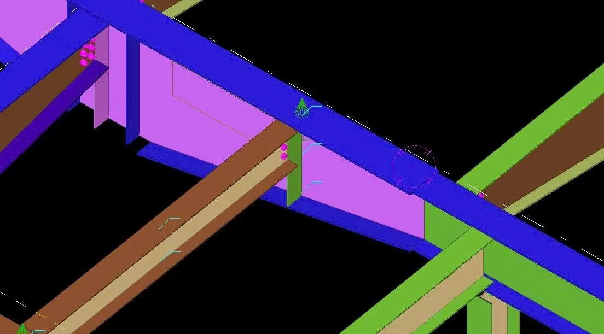
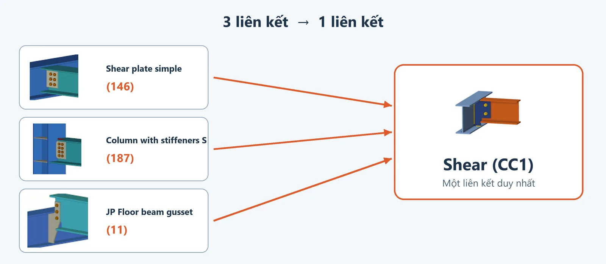
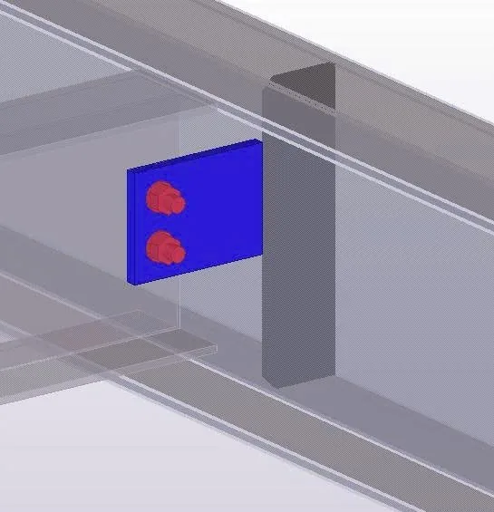
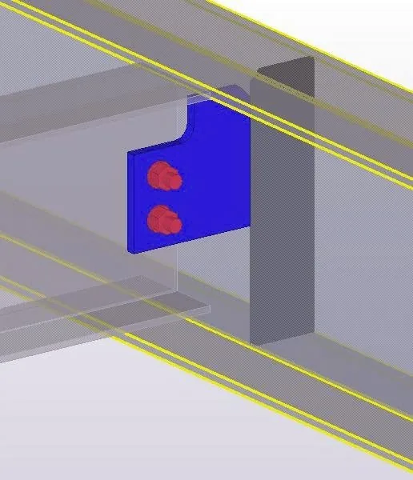
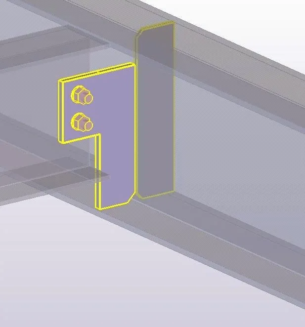
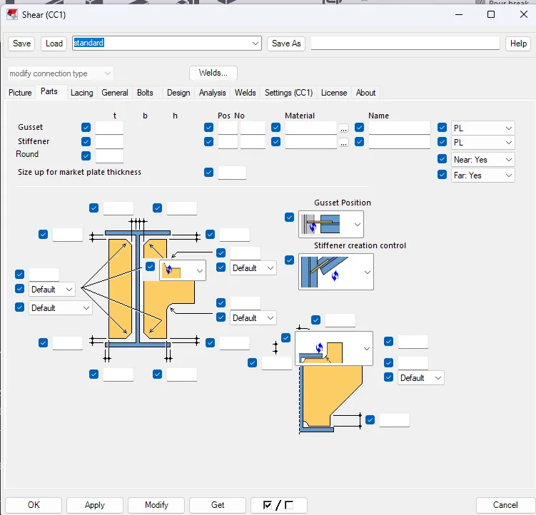

iVidLab Shear (CC1) — Liên kết dầm sàn vào dầm chính, dựng bản mã và bu-lông trong một lần chọn
Liên kết mới khắc phục các điểm yếu của liên kết Shear trước đây, dùng cho dầm sàn thép hình hoặc thép tổ hợp PEB Member: chọn dầm chính và dầm sàn, bản mã, bu-lông và phần cắt cánh được dựng tự động.
Tóm tắt nhanh
- Thay thế JP Floor beam gusset (11), Shear plate simple (146) và Column with stiffeners S (187), khắc phục các lỗi của liên kết gốc.
- Dầm sàn thép hình hoặc dầm tổ hợp PEB Member (kể cả vát thuôn, chia đoạn).
- Hình học theo đúng liên kết gốc "JP Floor beam gusset" của Tekla: bản mã, bu-lông, đầu dầm và phần cắt cánh.
- Xử lý được dầm sàn nghiêng và dầm sàn nằm thấp hơn trục dầm chính.
- Hộp thoại quen thuộc, có Save / Load / Modify như component Tekla thông thường.

1. Thay thế các liên kết cũ
Shear (CC1) thay cho ba liên kết Tekla thường dùng để nối dầm vào dầm hoặc cột:

- JP Floor beam gusset (11)
- Shear plate simple (146)
- Column with stiffeners S (187)
Một liên kết duy nhất thay vì chọn đúng liên kết cho từng trường hợp.
2. Khắc phục các lỗi của liên kết gốc
Các liên kết gốc còn điểm yếu khi dùng thực tế:
- JP Floor beam gusset (11): hay lỗi khi bắt liên kết, kết quả chưa ổn định.
- Column with stiffeners S (187): phải chỉnh nhiều thông số mới ra đúng.
Shear (CC1) khắc phục các điểm đó: bắt liên kết ổn định, ít thông số phải chỉnh tay hơn, và khi không dựng được thì báo rõ lý do.
3. Làm được gì
| Tính năng | Mô tả |
|---|---|
| Bản mã và bu-lông | Dựng bản mã nối dầm sàn vào dầm chính, kèm nhóm bu-lông, theo cách bố trí của liên kết gốc |
| Cắt đầu dầm và cánh | Tự cắt đầu dầm sàn và khoét cánh dầm để bản mã ôm vào, không phải cắt tay |
| Nhiều kiểu bản mã | Đủ các kiểu bản mã 0 đến 3 và nhiều lựa chọn bố trí bu-lông của liên kết gốc |
| Dầm tổ hợp PEB | Dùng được cho dầm tổ hợp PEB Member, kể cả dầm vát thuôn hoặc chia nhiều đoạn |
| Dầm sàn nghiêng | Tự tính theo độ dốc; khi dầm sàn thấp hơn trục dầm chính, bản mã tự lật khung cho đúng |
| Hộp thoại quen thuộc | Các tab Picture, Parts, Bolts như liên kết gốc, thêm tab Settings và Welds cho phần thông số của CC1 |
| Sửa được như thường | Save / Load thuộc tính, Modify để cập nhật cụm cũ, Delete để xoá sạch |



4. Cách dùng
- Bấm Shear (CC1) trong nhóm iViDLab của bảng Applications & components.
- Chọn dầm chính, rồi chọn dầm sàn cần nối.
- Nháy đúp vào component để chỉnh thông số trong hộp thoại, bấm Modify để cập nhật.

5. Cài đặt
- Ở mục Tải về bên dưới, chọn phiên bản Tekla đang dùng để tải gói
.tsep(từ Tekla 2016 trở lên). - Nếu đã cài bản cũ, gỡ bản cũ trong Tekla Extension Manager trước.
- Nhấp đúp file
.tsep, tick phiên bản Tekla rồi bấm Import. Gói được cài khi Tekla khởi động lần tiếp theo.
iVidLab Shear (CC1) — Connect floor beams to the main beam, with the gusset and bolts built in one pick
A new connection that fixes the weaknesses of the earlier Shear connection, for floor beams made of rolled sections or built-up PEB Member beams: pick the main beam and the floor beam, and the gusset, bolts and flange cuts are built automatically.
At a glance
- Replaces JP Floor beam gusset (11), Shear plate simple (146) and Column with stiffeners S (187), fixing the faults of the original connections.
- Rolled-section floor beams or built-up PEB Member beams (including tapered and segmented ones).
- Geometry follows Tekla's own "JP Floor beam gusset" connection: gusset, bolts, beam end and flange cuts.
- Handles sloped floor beams and floor beams lower than the main beam axis.
- A familiar dialog with Save / Load / Modify like any Tekla component.
1. Replaces the older connections
Shear (CC1) takes the place of three Tekla connections commonly used to join beams to beams or columns:
- JP Floor beam gusset (11)
- Shear plate simple (146)
- Column with stiffeners S (187)
One connection instead of picking the right one for each case.
2. Fixes the faults of the original connections
The original connections still have weaknesses in everyday use:
- JP Floor beam gusset (11): it often fails when attaching the connection, and the result is not stable.
- Column with stiffeners S (187): you have to adjust many parameters before it comes out right.
Shear (CC1) fixes those points: it attaches reliably, needs fewer hand-tuned parameters, and tells you why when it cannot build.
3. What it does
| Feature | Description |
|---|---|
| Gusset and bolts | Builds the gusset joining the floor beam to the main beam, with the bolt group, following the original connection's layout |
| Beam end and flange cuts | Cuts the floor beam end and notches the flange so the gusset fits, with no hand cutting |
| Many gusset types | All gusset types 0 to 3 and the original connection's bolt layout options |
| Built-up PEB beams | Works on built-up PEB Member beams, including tapered or multi-segment ones |
| Sloped floor beams | Follows the slope; when the floor beam is below the main beam axis the gusset flips its frame to stay correct |
| Familiar dialog | Picture, Parts and Bolts tabs as in the original connection, plus Settings and Welds tabs for CC1's own parameters |
| Editable as usual | Save / Load attributes, Modify to update an existing one, Delete to remove it cleanly |
4. How to use it
- Click Shear (CC1) in the iViDLab group of the Applications & components panel.
- Pick the main beam, then the floor beam to connect.
- Double-click the component to adjust the parameters in the dialog, and click Modify to update.
5. Installing
- In the Download section below, select your Tekla version to get the
.tseppackage (Tekla 2016 or newer). - If an older version is installed, uninstall it in Tekla Extension Manager first.
- Double-click the
.tsepfile, tick your Tekla version and click Import. It is installed the next time Tekla starts.
Tải vềDownload

Nhóm Zalo người dùng iViDLabiViDLab user group on Zalo
Quét mã QR hoặc bấm nút bên cạnh để vào nhóm: hỏi đáp khi sử dụng, báo lỗi và nhận thông báo bản cập nhật mới.
Scan the QR code or use the button to join the group: usage questions, bug reports and new release announcements.
Liên hệ iViDLabContact iViDLab
Theo dõi fanpage Facebook hoặc gửi email để được hỗ trợ và góp ý.
Follow the Facebook page or send an email for support and feedback.